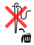
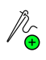
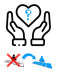
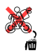
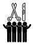
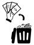

Les cartes Magouille
Il y a deux façons de collecter des cartes Magouille  :
:
lors la phase pré-op' - l'acte chirurgical grâce au prélèvement,
en faisant un triple organe.
Certaines cartes Magouille permettent de contrer les actes chirurgicaux d'autres joueurs. D'autres donneront des opportunités de se refaire.... mais attention il est aussi possible que vous perdiez votre temps et votre argent !
Les cartes Magouille peuvent être jouées à différents moments de la partie, pour savoir quand jouer une carte Magouille référer vous au descriptif de la carte.
Après avoir été jouée, une carte Magouille est jetée définitivement dans une défausse spécifique (défausse Magouille). Les cartes Magouille défaussées ne reviennent pas en jeu et ne peuvent pas être réutilisées.
Les cartes Magouille qui permettent de contrer des actes chirurgicaux peuvent changer la donne en cours de partie, à utiliser sans modération :

Rejet de la greffe à jouer sur greffe : ooops, vos anticorps se révèlent trop hargneux et la greffe échoue... votre organe tout beau tout neuf part à la poubelle !
.

Greffe express : Dans un élan de motivation, tu te greffes un organe de façon instantanée
.

Erreur de livraison à jouer sur un don d'organe : faire appel à des transporteurs bon marché n'était pas une bonne idée, l'organe est livré par négligence à un autre joueur au choix de la personne qui joue cette carte ! Le retour à l'envoyeur est une option possible.
.

Rupture de la chaîne du froid à jouer sur une transplantation : Coup de chaud... un aspect suintant ne vous inspire pas confiance, l'organe avarié part à la poubelle illico.
Les cartes qui vous feront perdre votre temps sont décevantes de premier abord... mais jouer avec grandiloquence dans les moments de tension pour faire monter la pression :
Flash info à jouer n'importe quand pour faire n'importe quoi: Les scientifiques ont découvert un nouvel organe... mais il ne sert à rien
.
Tripoti-tripota à jouer n'importe quand pour faire n'importe quoi : Touche l'organe (de ton choix) de ton voisin. La production décline toute responsabilité.
.
Mauvaises odeurs à jouer n'importe quand pour faire n'importe quoi : Tes organes puent et les voisins se plaignent...
.
Soirée gala à jouer n'importe quand pour faire n'importe quoi : Le « lac des organes » passe au cinéma, tous les cryptides y assistent pour leur plus grand plaisir.
Les cartes spéciales sont les plus puissantes du jeu... attention certaines se révèlent à double tranchant !

Ablation collective à jouer n'importe quand : Un moment de partage et d'amitié ? Rien de plus simple, choisis un type d'organe et toutes les créatures subissent l'ablation de celui-ci... la poubelle se remplit !
.
Changement de fournisseur à jouer n'importe quand : Chaque joueur passe sa main à son voisin dans le sens du jeu.
.

Reconditionnement à jouer pendant la phase pré-op' : Prends une carte de ton choix dans la poubelle à organes.
.
Gangrène à jouer pendant la phase pré-op' : A manque d'hygiène flagrant infection assurée... Pose cette carte sur l'organe de ton choix. En fin de manche l'organe part à la poubelle et l'infection se propage à un autre organe (au choix du joueur infecté). Tous les moyens sont bons pour se débarrasser ou refiler de la gangrène : l'infection reste accroché à l'organe lors des actes chirurgicaux (ablation, don, transplantation, substitution). Si la partie s'arrête alors qu'un organe gangrené est encore présent, celui-ci est compté à une valeur -1.